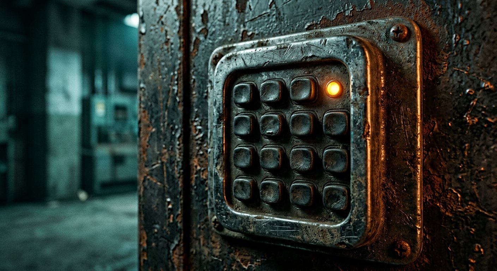

Renseignement
Codes de portes
Relevé du 2026-11-18. Les codes changent chaque jour — mais les emplacements des portes, eux, sont permanents.

CES CODES CHANGENT TOUS LES JOURS. Ceux affichés ici sont ceux du 18 novembre 2026 et servent d'exemple de format. Vérifiez toujours la source officielle avant votre raid.
Les restrictions CORS empêchent de récupérer ces codes automatiquement depuis le navigateur. Ce fichier est mis à jour manuellement (procédure documentée dans le README). Sources de référence :
playdeltaforce.com/events/hq,
deltaforceitems.com.
| Carte | Code du 2026-11-18 | Emplacement de la porte |
|---|---|---|
| Zero Dam | 8865
|
Côté droit de la Major Substation : ramper dans le pipeline souterrain jusqu'au bout du passage. |
| Layali Grove | 4565
|
Entrée souterraine près du point marqué dans le coin inférieur droit de la carte. |
| Brakkesh | 6468
|
Côté nord du Hammam (Old Bath). |
| Space City | 8572
|
Industrial Zone — Assembly Room, 2e étage. |
| Tide Prison | 2161
|
Prison Administrative Area, 1er étage, coin de l'escalier du hall. |
| AZ3 Nuclear Plant | 2430
|
Bâtiments situés près de la Seawater Treatment Area. |
Énigme cross-mode
Le secret CRACKED
Carte : Zero Dam
Une porte secrète porte l'inscription CRACKED. Son code ne se trouve pas en mode Operations mais en Havoc Warfare, sur la carte Cracked en Attack/Defend.
Méthode : Des symboles en code morse sont cachés au niveau des objectifs A1, B1, C1 et D1. Les traduire donne les chiffres du code.
- Le code change toutes les 24 heures.
- Il peut être différent d'un joueur à l'autre : il faut le trouver soi-même.
Conseils
- Noter le code avant d'entrer en raid : impossible de consulter un site une fois en match.
- Les salles à code sont des points de camping connus : entrer vite, piller vite, ressortir par un autre chemin.
- Un code refusé = code périmé : revérifier la date du relevé.